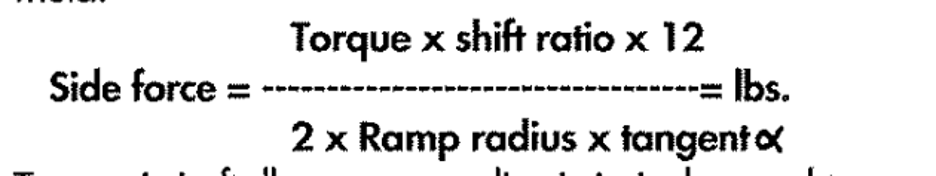
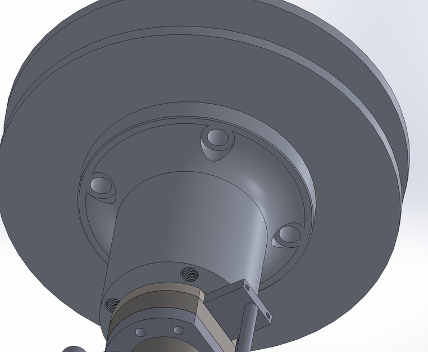
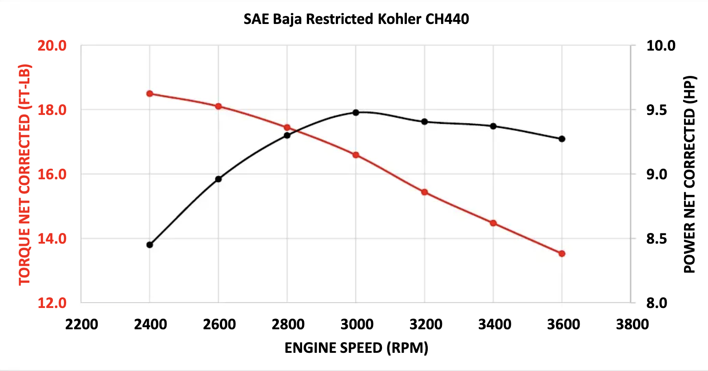
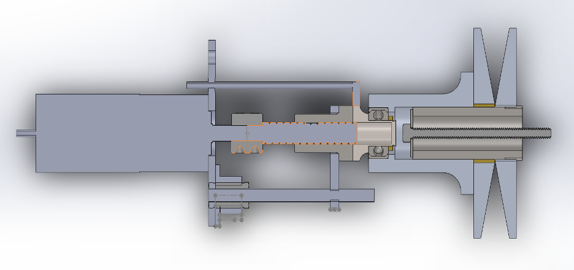

Electronic CVT Mechanical Design
Skills: Mechanical Design, Machine Design, Machining, CAD (Solidworks), Design for Manufacturing, Fastener Analysis, Finite Element Analysis, Motor Selection
Project Overview
This design document outlines the mechanical engineering process behind the electronic continuously variable transmission (eCVT) system built for the Northwestern Baja SAE team. The goal was to electronically actuate the CVT using a ball screw and motor assembly to adjust gear ratios on demand, replacing traditional spring and cam-based CVT actuation.
Design Requirements
- Generate sufficient force to actuate the primary sheave
- Ensure torque transmission through robust bolted connections
- Ensure overall structural integrity and packaging feasibility
System Layout
The main components of the eCVT system include:
- Moving and static sheaves
- Ball screw and nut
- Flange and adapter
- Motor and coupler
- Thrust bearing and linear mounting system
Motor and Force Calculations
In order to achieve goal 1 band generate sufficient force to actuate the primary sheave, I needed to find the force actually required! To do this, I started with this equation for the 'side force'. This is the force required to move the sheave of the secondary (which we are still using as stock). Our system need to be able to output this force in order to work. Using the equation below, we found it to be near 1500N.
Next, I needed to find out how I could generate this force using a DC motor. Our team used a ball screw and nut system to transfer rotational force to linear. Using the equations below for a ball screw, I could derive the specifed torque required from our motor. It came out to be around 3.8Nm

The last unknown to solve for motor speccing was the rotational speed. Since I knew the ball screw needed to travel its full length (~25mm) in under 1 second. With a screw of lead 5mm then this comes out to 5 rev/s or approximately 350RPM.
Bolted Connection Analysis
Bolted flange connections needed to be evaluated to ensure frictional clamping force exceeded the expected torque. This next series of calculations is aimed at finding the reaction force exerted by the friction btween the sheave and sheave flange, as seen below which have holes for the bolted connection.
Bolt preload: \( P_i = \frac{3}{4} \cdot \left(S_p \cdot \frac{1}{2}\right) \cdot A_T \)
Force of friction: \( F_{\text{friction}} = \mu \cdot F_N \)
Reaction torque: \( T = F_{\text{friction}} \cdot L \)
I found that the reaction torque would be about 59Nm, far stronger than the maximum output torque from the engine, as seen below, making the design safe. Custom Component Design
Several components were custom-designed and manufactured, including the sheaves, coupler, and ball screw mounts. Due to its size, the coupler gave me quite a bit of trouble while manufacturing. However, I am happy to say that with the help of the team this primary ECVT was manufactured almost entirely by us.
Mounting and Integration
The mounting system includes linear rods and bearings to constrain motion, and a plate for mounting sensors and the ball nut. Though functional, the system was too large to be well integrated to the existing chassis. This was especially apparent as the end o the ECVT motor extended beyond the cage.
Conclusions and Recommendations
While the eCVT functioned and met performance goals, packaging challenges prevented its use in competition. Future improvements include alternative actuation methods (e.g., pneumatic), better motor packaging, and more robust mounting strategies.